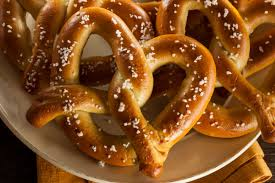

Perfect homemade soft pretzels
Introduction
Soft pretzels have been a European delicacy from France and Germany. I chose soft pretzels because they have been a family recipe that I have been making with my parents for years and therefore have a lot of meaning to me. No original recipe as far as I'm aware.
Ingredients

Pretzels
- 2 ¼ teaspoons of yeast
- 1 tablespoon of brown sugar
- 1 ½ warm water (~100°F or 40°C)
- 1 tablespoon unsalted butter, melted and cooled slightly.
- 1 teaspoon sea salt
- 3 ¾ cups all purpose flour
- rock/coarse salt for topping
Baking soda bath
- ½ cups of baking soda
- 9 cups of water

Instructions
Pretzels
- Whisk the yeast and sugar into the warm water, cover it and wait 1 minute.
- Whisk in the melted butter and sea salt. add 3 cups of flour and mix with a wooden spoon until combined.
- Add ¾ cup more flour until the dough pulls away from the sides of your bowl. (if it is still sticky, add up to ¼ cup more flour 1 tablespoon at a time as needed) Poke the dough with your finger, if it reforms/bounces back it is ready to be kneaded.
- Knead the dough for 3-5 mins, once you poke it and it slowlybounces back->it is ready to rise
- Form dough into ball and give it 10-30 mins to rise. While rising, preheat your oven to 400°F and begin baking soda bath while waiting.
- Preheat oven to 400°F. Line 2 baking sheets with parchment paper. lightly spray paper with nonstick spray or grease with butter. Set aside.
- Cut dough into pieces of ~75g each.
- Roll the dough into a ~20cm long rope/snake and fold it into a pretzel shape, twist the folded ends around each other to finish to shape.
- Do the baKing soda bath step.
- Sprinkle coarse salt on top of the pretzels and bake for 12-15 mins.
- Enjoy!
Baking soda bath
Put the baking soda and water in a pot at a boiling temp. Put 1-2 pretzels in the water for 20-30 secs. NO LONGER. Use a spatula to lift pretzels out of the water and let extra water drip off.